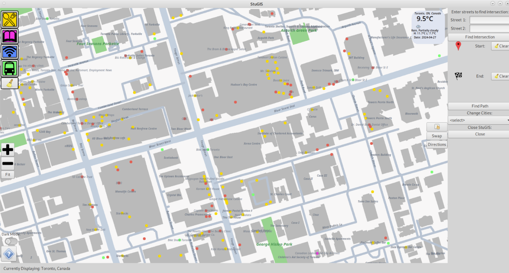

Skip to main content
About Me
My Projects
Skills & Experiences
Hobbies & Interests
My Projects
I love to make things using the skills I've learned. Please take a look!
A Rhythm Game similar to
Piano Tiles
made in the
C
language for the DE1-SoC Board.
Video Demo
GitHub Link
A GIS desktop app designed to
make student life easier
, coded in
C++
for the
Linux
system.
GitHub Link

A screenshot of the stuGIS interface.